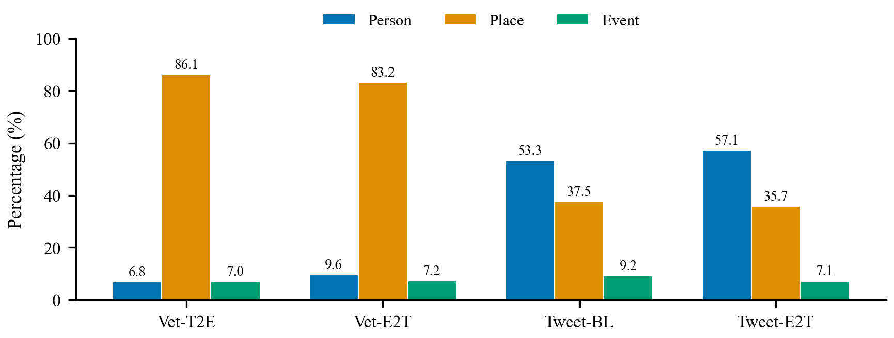

Introduction
Loneliness and cognitive decline represent significant challenges faced by the elderly, necessitating effective support mechanisms [1, 2]. Reminiscence therapy, the structured recall of past memories, has been shown to reduce depression, improve self-identity, and enhance quality of life in older adults [3, 4, 5]. Connecting individuals through shared memories can alleviate isolation and foster a sense of community [6, 7]. However, such connections require identifying common contexts: people, places, and events that individuals have in common.
In practice, these contextual elements are rarely stated explicitly. Personal narratives are fragmented, unstructured, and fuzzy; speakers assume prior knowledge, omit details, and make abrupt subject changes [8, 9]. A veteran might describe "sailing out of the harbor, catching a glimpse of a colossal figure holding a torch" rather than naming the Statue of Liberty. This implicit referencing style is pervasive in reminiscence text, yet existing Named Entity Recognition (NER) systems are designed primarily for explicit mentions [10, 11]. While prior work on implicit entity recognition in tweets [30, 31] has demonstrated the feasibility of detecting implied entities in short social media posts, no existing work addresses implicit entity recovery in the reminiscence domain, where references are culturally grounded, temporally distant, and emotionally charged.
We address this gap by introducing the concept of Implicit Reminiscence Context (IRC), defined as the set of latent entities (persons, places, events) that are contextually referenced but not explicitly named within free-form reminiscence narratives. We formalize IRC recovery as a ranking problem: given a text segment containing an implicit reference, the system must retrieve and rank candidate entities by plausibility. We note that this formulation assumes the implicit reference has already been detected (i.e., the recognition step is given); our evaluation focuses on the linking/resolution step. Extending the pipeline to jointly detect and resolve implicit references is an important direction for future work (see Section 8).
Our contributions are as follows:
- Task formalization. We define IRC recovery as a novel NLP task, formalizing it as entity ranking over implicit mentions with a layered evaluation framework combining exact, alias, and fuzzy matching.
- Dataset construction. We create four complementary datasets across two domains (veterans' recollections and tweets) using text-based transformation and entity-driven generation, totaling over 2,200 annotated samples.
- Systematic comparison. We evaluate three recognition paradigms: direct LLM inference, embedding-based retrieval, and hybrid RAG, revealing distinct performance profiles across domains and generation strategies.
- Empirical insights. We demonstrate that the primary bottleneck in IRC recovery is retrieval coverage (not ranking quality), that LLM-based methods excel on natural text while RAG dominates on synthetic text, and that entity type and domain strongly modulate performance.
Related Work
Reminiscence Therapy and Technology
Reminiscence therapy involves the intentional recall of past memories to enhance well-being in older adults [3, 4]. It has been linked to reduced depression [5, 12], improved cognitive function [13], and stronger social bonds [6]. Technology-assisted approaches include lifelogging applications [14], augmented reality photo albums [15, 16], digital music-based interventions [17], and, more recently, conversational agents powered by large language models [18, 19]. A systematic review found that AI companions improved mood in 77.8% of cases and served as catalysts for social interaction in 41% [20]. Recent qualitative studies have confirmed the acceptability of digital tools among older adults [21], while virtual life story clubs have shown promise for reducing loneliness [22]. However, existing systems primarily support recall of explicit memories; none address the challenge of recovering implicit contextual references from unstructured narratives.
Named Entity Recognition and Implicit Entities
NER identifies and classifies named entities (persons, organizations, locations) in text [10]. Deep learning has substantially advanced NER accuracy [23, 24], and recent comprehensive surveys document progress across fifteen entity categories [25, 26]. Named Entity Linking (NEL) extends NER by resolving mentions to knowledge base entries [27, 28, 29]. However, standard NER targets explicit mentions. Implicit Entity Recognition (IER) addresses entities inferred from context rather than directly stated [30, 31]. Perera et al. [32] explored IER in clinical texts, while Hosseini and Bagheri [33] investigated implicit entity linking in tweets. A 2025 survey identifies implicit, nested, and discontinuous entities as key open challenges [34]. Our work extends IER to the reminiscence domain, where implicit references are pervasive and culturally grounded.
LLM-Based Zero-Shot and Few-Shot NER
Large language models have transformed NER through zero-shot and few-shot learning. PromptNER [35] demonstrated state-of-the-art few-shot performance through entity definition prompting. VicunaNER [36] showed that open-source LLMs can achieve competitive zero-shot NER through multi-turn dialogue. An empirical study at EMNLP 2023 [37] established that ChatGPT reaches F1 = 0.620 on clinical NER in zero-shot settings. Self-improving frameworks [38] have further enhanced zero-shot NER by leveraging unlabeled corpora for self-consistency training. GL-NER [39] introduced generation-aware masking for few-shot settings, while cooperative multi-agent frameworks [40] address context correlation challenges. GPT-4 has achieved F1 = 0.962 on specialized ophthalmology NER [41]. These advances demonstrate the feasibility of LLM-based entity recognition without task-specific training, a capability we leverage for implicit entity inference.
Retrieval-Augmented Generation for Entity Tasks
Retrieval-Augmented Generation (RAG) combines neural retrieval with generative reasoning, first introduced by Lewis et al. [42] for knowledge-intensive NLP tasks. The core idea is to condition text generation on retrieved documents, grounding model outputs in external evidence. Recent surveys document over 1,200 RAG papers from 2024 alone, spanning multimodal and agentic architectures [43, 44]. For entity-specific tasks, RAG has been applied in several ways. NER-RAG integration has been used for hallucination detection in abstractive summarization, where retrieved entity facts serve as verification anchors [45]. In biomedical entity linking, generative relevance feedback using GPT-4o and open-source LLMs (Gemma, Qwen) has improved candidate retrieval for rare entities [46]. Contextual augmentation at COLING 2025 demonstrated that LLM-generated context improves entity linking accuracy in specialized domains where surface-form matching is insufficient [47].
On the retrieval side, embedding-based entity linking has advanced through graph embedding for entity alignment across knowledge graphs [48], knowledge graph embedding with algebraic and geometric representations [49], and binary quantization for efficient large-scale entity retrieval [50]. Cross-attention mechanisms combining semantic embeddings have further improved linking accuracy [72]. Our hybrid RAG approach combines embedding-based retrieval with LLM reasoning in a two-stage pipeline: the embedding stage surfaces candidate entities from a pre-indexed space, and the LLM stage re-ranks candidates using contextual reasoning. This architecture allows the model to ground its inferences in a candidate pool before applying the more expensive generative reasoning step, balancing retrieval breadth with inference depth.
Task Definition
We formalize Implicit Reminiscence Context (IRC) recovery as a structured ranking problem. Let \(\mathcal{D} = \{(t_i, e_i, c_i)\}_{i=1}^{N}\) be a dataset of \(N\) annotated samples, where \(t_i\) is a text segment containing an implicit reference, \(e_i \in \mathcal{E}\) is the gold-standard entity, and \(c_i \in \{\textsc{Person}, \textsc{Place}, \textsc{Event}\}\) is the entity type.
An implicit reference is a text span in \(t_i\) that describes entity \(e_i\) through contextual cues (roles, attributes, temporal markers, geographic descriptors) without using the canonical name or common aliases. Formally, a reference is considered implicit if the entity's canonical name and all known aliases (maintained via an alias-canonical map) are absent from the normalized text. This binary criterion distinguishes our formulation from graded approaches: references such as "the Big Apple" for New York are classified as implicit because the canonical name does not appear, even though the alias is culturally well-known. For example, "the colossal figure holding a torch" implicitly references "Statue of Liberty."
Given a recognition function \(f: \mathcal{T} \times \mathcal{C} \rightarrow \mathcal{E}^K\), the task is to produce a ranked list of \(K\) candidate entities \(\hat{\mathbf{e}}_i = ({\hat{e}_{i,1}, \ldots, \hat{e}_{i,K}})\) such that \(e_i\) appears as early as possible in \(\hat{\mathbf{e}}_i\). The function \(f\) may additionally receive entity type \(c_i\) as a conditioning signal.
Correctness is assessed via a layered matching policy. A prediction \(\hat{e}_{i,k}\) is considered correct if any of the following conditions hold:
(1) Exact match: normalized string equality after lowercasing, Unicode normalization, and punctuation removal.
(2) Alias match: LLM-assisted recognition of semantically equivalent names (e.g., "D-Day" and "Normandy landings").
(3) Fuzzy match: Jaccard token similarity exceeds a threshold \(\tau\):
where \(\tau = 0.60\) for multi-token entities. The first relevant rank \(r_i\) is the earliest position at which any matching criterion is satisfied.
Datasets
We construct four datasets spanning two domains and two generation strategies, as summarized in Table 1 and Figure 1.
Text-Based Transformation (T2E)
Veterans' interview transcripts were sourced from the U.S. Library of Congress Veterans History Project (loc.gov/vets), a publicly accessible archive of oral histories from American military veterans. Ten narrators' interviews were selected, yielding transcripts that were rewritten into coherent first-person narratives and segmented into short units capturing a single detail or event. Entity types span five categories: places (32.4%), professions (19.9%), events (18.1%), people (16.0%), and organizations (13.7%). Entities were extracted via two complementary approaches: an LLM-based extractor operating under strict inclusion rules, and a modern NER model as a deterministic alternative. Inclusion criteria required: only well-known figures or explicit family roles (Person), named geographic locations (Place), and historically significant events (Event). Entities were canonicalized using an alias map, and one primary entity per segment was selected and replaced with an implicit description using type-aware rewrite rules. Persons were replaced with roles or achievements; places with geographic or cultural descriptors; events with timeframes, actions, or outcomes. A strict no-name-leak check ensured explicit names did not appear in the implicit text. All 846 retained samples include both the original text and the implicitly rewritten version, with a "High" entity-text relatedness confidence score.
Entity-Driven Generation (E2T)
Explicit entity lists from both veterans' transcripts and a tweet benchmark [33] were provided to an LLM, which generated new narratives referencing entities implicitly. Veterans' entities produced longer recollections; tweet entities produced concise posts. All samples were validated for entity-text relatedness, absence of name leakage, and type fidelity.
Twitter Baseline
An annotated dataset of tweets from Hosseini [30] was incorporated as a benchmark for short-form implicit entity recognition. The full dataset contains 856 annotated tweets spanning 273 entities across 59 fine-grained entity types (Movie, Book, Country, City, Writer, Politician, Athlete, etc.), substantially more diverse than the Work-only subset (115 rows) used in prior evaluations. From this, 435 tweets were selected for the baseline evaluation. This dataset is publicly available via the associated GitHub repository [31].
Table 1. Dataset statistics. Vet-T2E = veterans text-to-entity; Vet-E2T = veterans entity-to-text; Tweet-BL = Twitter baseline; Tweet-E2T = Twitter entity-to-text. Entity type percentages sum to 100% per dataset.
| Vet-T2E | Vet-E2T | Tweet-BL | Tweet-E2T | |
|---|---|---|---|---|
| Samples | 1,110 | 530 | 435 | 126 |
| Unique entities | 529 | 529 | 126 | 126 |
| Avg. entity length (tokens) | 10.04 | 11.47 | 11.63 | 11.75 |
| % Person | 6.85 | 9.62 | 53.33 | 57.14 |
| % Place | 86.13 | 83.21 | 37.47 | 35.71 |
| % Event | 7.03 | 7.17 | 9.20 | 7.14 |

Figure 1. Entity type distribution by dataset. Veterans' narratives are dominated by Place entities (>83%), while tweets are predominantly Person-centric (>53%). Events remain the minority class across all datasets.
Methods
We evaluate three recognition paradigms within a unified framework. All methods receive a text segment \(t_i\) and entity type \(c_i\), and produce a ranked list of \(K\) candidate entities.
Figure 2. System architecture. Input text and entity type are processed by three recognition methods. Each produces a ranked candidate list evaluated via layered matching and ranking metrics.
LLM-Based Recognition
A two-step prompting strategy guides LLM reasoning. First, a contextualization prompt generates situational or historical background from the text. Second, an inference and ranking prompt uses the context to hypothesize candidate entities and rank them by plausibility. Entity type conditioning refines instructions (e.g., "Who is the person described?" vs. "What is the place described?"). We use \(K = 3\) candidates and a fixed "historical background" prompt strategy.
Embedding-Based Recognition
Text segments are encoded into dense vector representations and compared against a pre-indexed entity embedding space. The top \(K = 5\) nearest neighbors by cosine similarity form the candidate list. This approach relies purely on semantic similarity without explicit reasoning.
Hybrid RAG Recognition
The hybrid approach first retrieves \(K = 5\) candidate entities via embedding similarity, then feeds these candidates alongside the original text into an LLM for re-ranking with reasoning. This combines the broad retrieval coverage of embeddings with the contextual reasoning of LLMs.
Implementation Details and Reproducibility
Model specification. The current experiments use a single LLM configuration for both the LLM-based and RAG recognizers, and a single embedding model for the embedding-based and RAG retrieval stages. We acknowledge that the specific model identities (vendor, version, API date, temperature, and max token settings) are not disclosed in the original experimental protocol. This is a limitation that constrains reproducibility; we report it transparently rather than specifying models post-hoc. Future work should conduct a systematic multi-model comparison (e.g., GPT-4o, Claude 3.5 Sonnet, Llama 3 70B for LLM inference; text-embedding-3-large, E5-large-v2, BGE-large-en for embeddings) to disentangle task difficulty from model capability.
Gold-standard construction. For the veterans' T2E dataset, gold entities were established through the extraction and canonicalization pipeline (Section 4.1), with each sample validated for entity-text relatedness (all retained samples received "High" confidence). For the Twitter baseline, gold labels originate from the Hosseini [30] annotation protocol. We note that inter-annotator agreement statistics are not available for either source; given the inherent ambiguity of implicit references (where multiple valid interpretations may exist), multi-reference evaluation with agreement metrics is an important direction for future validation.
Matching layer breakdown. The three-tier matching policy (exact, LLM-alias, Jaccard >= 0.60) is applied hierarchically. We note that the relative contribution of each matching layer to the overall hit rate is not currently decomposed in the evaluation. This decomposition would clarify how much of the reported performance depends on lenient fuzzy matching versus strict exact matching, and we flag this as a priority for the next revision of the evaluation framework.
Evaluation Metrics
Performance is assessed using ranking-based metrics at cutoffs \(K \in \{1, 3, 5\}\):
Hit@K measures the proportion of queries where the correct entity appears within the top \(K\) predictions:
$$\text{Hit@K} = \frac{1}{N} \sum_{i=1}^{N} \mathbb{1}\left[r_i \leq K\right]$$Mean Reciprocal Rank captures ranking precision. Global MRR averages over all queries (assigning reciprocal rank 0 for misses):
$$\text{MRR}_{\text{global}} = \frac{1}{N} \sum_{i=1}^{N} \frac{\mathbb{1}[r_i < \infty]}{r_i}$$Filtered MRR averages only over queries with at least one correct retrieval, isolating ranking quality from retrieval coverage:
$$\text{MRR}_{\text{filtered}} = \frac{1}{|\mathcal{H}|} \sum_{i \in \mathcal{H}} \frac{1}{r_i}, \quad \mathcal{H} = \{i : r_i < \infty\}$$Experiments and Results
Overall Performance
Table 2 reports recognition performance across all dataset-method combinations. Several patterns emerge.
Table 2. Implicit entity recognition performance. Best results per dataset are shown in bold blue. Methods: LLM = direct LLM inference; Emb. = embedding-based retrieval; RAG = hybrid retrieval-augmented generation.
| Dataset | Method | Hit@1 | Hit@3 | Hit@5 | Hit@10 | MRRglobal | MRRfiltered |
|---|---|---|---|---|---|---|---|
| Vet-T2E | LLM | 0.573 | 0.691 | 0.691 | 0.69 | 0.626 | 0.907 |
| RAG | 0.230 | 0.276 | 0.287 | 0.29 | 0.253 | 0.879 | |
| Emb. | 0.047 | 0.089 | 0.115 | 0.12 | 0.071 | 0.615 | |
| Vet-E2T | LLM | 0.215 | 0.288 | 0.288 | 0.29 | 0.248 | 0.861 |
| RAG | 0.231 | 0.260 | 0.274 | 0.27 | 0.246 | 0.898 | |
| Emb. | 0.103 | 0.160 | 0.181 | 0.18 | 0.133 | 0.735 | |
| Tweet-BL | LLM | 0.674 | 0.805 | 0.805 | 0.80 | 0.735 | 0.913 |
| RAG | 0.664 | 0.775 | 0.784 | 0.78 | 0.720 | 0.918 | |
| Emb. | 0.292 | 0.487 | 0.577 | 0.58 | 0.398 | 0.690 | |
| Tweet-E2T | LLM | 0.714 | 0.778 | 0.778 | 0.78 | 0.745 | 0.957 |
| RAG | 0.849 | 0.889 | 0.889 | 0.89 | 0.868 | 0.976 | |
| Emb. | 0.548 | 0.730 | 0.778 | 0.78 | 0.643 | 0.827 |
LLM-based recognition dominates natural text. On both Vet-T2E and Tweet-BL (datasets derived from real transcripts and tweets), LLM-based inference achieves the highest Hit@1 (0.573 and 0.674, respectively) and global MRR (0.626 and 0.735). This advantage likely reflects the LLM's ability to perform multi-hop reasoning over contextual cues that would not be captured by surface-level embedding similarity.
Hybrid RAG excels on synthetic text. On entity-driven generated datasets (Vet-E2T and Tweet-E2T), RAG achieves the best Hit@1 (0.231 and 0.849). Generated texts tend to use more systematic and predictable description patterns, making embedding retrieval more effective as a first-pass filter.
Embedding-based methods consistently underperform. Across all four datasets, embedding-based recognition yields the lowest scores. The gap is most severe on veterans' narratives (Hit@1 = 0.047 on Vet-T2E), where long-form text and culturally specific references exceed the capacity of vector similarity alone.

Figure 3. Hit@K performance across datasets and recognition methods. LLM-based inference leads on natural text (Vet-T2E, Tweet-BL), while hybrid RAG dominates on entity-driven generated text (Tweet-E2T). Embedding-based methods trail consistently.
Retrieval Coverage vs. Ranking Quality
A striking finding is the large gap between global and filtered MRR (Figure 4). Filtered MRR exceeds 0.61 for all method-dataset pairs, and surpasses 0.85 for most LLM and RAG configurations. This means that when the correct entity is retrieved, it is typically ranked highly. The primary bottleneck is retrieval coverage: many queries fail to surface the correct entity at all.
This pattern is most pronounced for embedding-based methods on veterans' data: filtered MRR = 0.735 despite global MRR = 0.133 on Vet-E2T, indicating that the embedding space captures relevant semantics but has severe coverage gaps. The RAG approach partially mitigates this by expanding the retrieval pool, while LLM-based methods sidestep retrieval entirely through direct generation.

Figure 4. Global MRR heatmap across datasets and methods. Darker cells indicate stronger performance.

Figure 5. Filtered vs. global MRR comparison. The consistent gap between filtered and global scores reveals that the primary bottleneck is retrieval coverage, not ranking quality: when methods find the correct entity, they rank it highly.
Domain and Text-Type Effects
Performance varies substantially across domains. Tweet-based datasets consistently yield higher scores than veterans' narratives across all methods. This reflects both the conciseness of tweets (which limits ambiguity) and the public-figure dominance of tweet entities (which aligns with LLM training data). Veterans' narratives pose greater challenges due to longer context, culturally specific references, and the dominance of Place entities (>83%), which tend to have more varied and context-dependent descriptions than Person entities.
Comparing generation strategies within a domain, entity-driven texts (E2T) generally yield higher performance than text-based transformations (T2E) for RAG and embedding methods, since generated descriptions follow more systematic patterns. However, LLM-based inference shows the reverse on veterans' data (Hit@1: 0.573 T2E vs. 0.215 E2T), suggesting that the LLM benefits from the richer contextual grounding present in transformed real narratives.
Performance by Entity Type
Figure 7 presents Global MRR broken down by entity type across all datasets and methods. The results reveal pronounced entity-type effects that interact with both domain and method:
Events are the easiest entity type to recognize implicitly. Across Twitter datasets, Event entities achieve the highest MRR (up to 0.90 for LLM on Tweet-E2T), likely because historical events have distinctive temporal and causal signatures that are well-represented in LLM training data.
Person entities show method-dependent performance. On Tweet-E2T, RAG strongly outperforms LLM for Person recognition (MRR ~0.80 vs. ~0.50), suggesting that embedding retrieval captures person-description associations that direct LLM inference may miss. This pattern reverses on Vet-T2E, where LLM inference leads (MRR ~0.35 vs. ~0.20 for RAG).
Place entities are consistently the hardest. On veterans' datasets, Place MRR drops below 0.10 for all methods despite Places comprising >83% of the data. This indicates that high frequency does not compensate for the inherent difficulty of recognizing places from indirect descriptions; places are often described through sensory and cultural attributes that vary enormously across narrators.

Figure 7. Global MRR by entity type across datasets and methods. Events are consistently the easiest to recognize; Places are the hardest. Person recognition is strongly method-dependent.
Hit@K Saturation Analysis
Figure 8 plots Hit@K as a function of K (1, 3, 5, 10) for each method. A notable finding is that performance saturates early: for LLM-based methods, Hit@5 equals Hit@10 across all datasets, confirming that the LLM's top-3 candidates (the configured output size) effectively determine the outcome. Embedding and RAG methods show marginal gains between K=5 and K=10 only on Twitter data, indicating that expanding the candidate pool has diminishing returns.

Figure 8. Hit@K saturation curves. Performance plateaus rapidly, particularly for LLM-based methods where Hit@5 = Hit@10. This confirms the primary bottleneck is the initial retrieval/generation step, not the depth of the candidate list.

Figure 6. Average performance profiles across all metrics. LLM-based and hybrid RAG methods show similar overall profiles, with LLM slightly stronger on Hit@K and RAG on filtered MRR. Embedding-based methods lag on all dimensions.
Discussion
Our results establish IRC recovery as a tractable NLP task with distinct challenges compared to standard NER or entity linking. Several findings merit further discussion.
Why LLM Outperforms RAG on Natural Text
The LLM's advantage on natural text datasets (Vet-T2E, Tweet-BL) likely stems from its ability to perform multi-step reasoning over nuanced contextual cues. Implicit references in real narratives often require integrating temporal markers, cultural knowledge, and emotional context, capabilities that emerge from the LLM's pre-training on diverse corpora. Embedding-based retrieval, which RAG depends on as its first stage, may fail to surface the correct entity when the textual description is highly indirect or metaphorical.
Why RAG Dominates Synthetic Text
Entity-driven generated text, produced by an LLM following systematic patterns, exhibits more regular description structures. This regularity benefits embedding retrieval, as the generated descriptions are more likely to cluster near the correct entity in embedding space. RAG then leverages LLM reasoning to re-rank from a strong candidate pool. The LLM-only approach, lacking this retrieval grounding, occasionally generates plausible but incorrect entities.
The Coverage Bottleneck
The large gap between filtered and global MRR across all configurations points to a fundamental coverage challenge. For many implicit references, none of the top-K predictions match the gold entity. This suggests that expanding the candidate pool (through larger K values, ensemble retrieval, or iterative refinement) may yield substantial gains. The high filtered MRR scores indicate that ranking mechanisms are already effective; the challenge is surfacing the correct entity in the first place. We note that the filtered MRR interpretation should be read with caution: because the layered matching policy includes Jaccard fuzzy matching (threshold 0.60), some "hits" may reflect partial lexical overlap rather than true semantic recognition. A decomposition of match types (exact vs. alias vs. fuzzy) would strengthen this analysis.
Qualitative Error Analysis
To illustrate failure modes, we examine representative cases. Universal failures (all methods fail) typically involve culturally specific or obscure entities: a description of "a prominent philanthropic organization known for its commitment to social justice" fails to resolve to "Ford Foundation" across all methods, likely because the description could equally match several foundations. Similarly, implicit references to local geographic landmarks (specific streets, small-town schools) systematically fail because these entities are underrepresented in LLM training corpora and embedding spaces.
Method-divergent cases are also instructive. For the input "we packed into the church that day, breaths held as he spoke of a dream, his voice rising like a hymn," the LLM correctly identifies "Martin Luther King Jr." via the "dream" speech cue, while embedding retrieval returns "gospel" and "church service" related entities. Conversely, for generated tweets referencing movies, RAG frequently outperforms LLM because the embedding stage retrieves the correct film title from surface-level plot descriptors that the LLM may interpret more abstractly.
Entity Type Effects
The per-entity-type analysis (Figure 7) reveals that entity type modulates performance more strongly than either domain or method choice. Events achieve the highest MRR across all configurations (up to 0.90), likely because historical events have distinctive temporal and causal signatures. Persons show a striking method interaction: RAG outperforms LLM by ~0.30 MRR for Person entities on Tweet-E2T, yet LLM leads by ~0.15 on Vet-T2E. This suggests that the optimal method depends on both entity type and narrative style. Places are consistently the hardest category (MRR < 0.10 on veterans' data for all methods), despite being the majority class (>83%). This inverse relationship between frequency and difficulty is a key finding: the category most relevant to the reminiscence therapy use case is also the most challenging to recognize. Expanding event coverage and developing place-specialized recognition strategies are priorities for future work.
Limitations
Several limitations should be noted, organized by severity.
Reproducibility gaps. The specific LLM and embedding model identities are not disclosed in the experimental protocol (see Section 5.4). Without model names, versions, API dates, temperature settings, and random seeds, the results cannot be exactly reproduced. This is the most critical limitation for a publication venue; future versions must specify all model configurations.
Dataset construction circularity. The entity-driven generation (E2T) datasets use an LLM to generate implicit texts, and the LLM-based recognizer may use the same or a similar model to resolve them. This circularity means E2T results may reflect the model's self-consistency rather than genuine task difficulty. The strong RAG performance on Tweet-E2T (Hit@1 = 0.849) should be interpreted in this context. To mitigate this concern, future work should enforce cross-model splits: generate with model A, recognize with model B.
No external baselines. The three methods are compared only against each other. Standard NER tools (spaCy, Flair, fine-tuned BERT) and the Hosseini (2022) system itself are not evaluated on our datasets. Without external baselines, absolute performance levels (e.g., Hit@1 = 0.674) cannot be contextualized. Adding supervised and off-the-shelf baselines is a priority.
No ablation studies. The effects of entity type conditioning, prompt strategy choice, and retrieval pool size (K) are not isolated. Ablations removing type conditioning, varying K from 1 to 20, and comparing prompt strategies (chain-of-thought, few-shot, direct) would substantially strengthen the empirical contribution.
Single gold reference. The evaluation relies on one gold entity per segment; in practice, multiple valid interpretations may exist for ambiguous implicit references. Inter-annotator agreement is not reported for either dataset source.
Cultural and linguistic scope. The veterans' dataset is drawn from 10 English-language transcripts of American veterans sourced from the Library of Congress, limiting cultural, linguistic, and demographic generalizability. The recognition vs. linking distinction (Section 1) further constrains deployment: our evaluation assumes implicit references have been pre-identified, while a full system must also detect their presence. Computational costs (embedding retrieval is orders of magnitude cheaper than LLM inference) are not evaluated.
Conclusion
We have introduced Implicit Reminiscence Context (IRC) recovery as a novel NLP task, formalized it as entity ranking over implicit mentions, and provided a systematic empirical investigation across four datasets, three recognition methods, and multiple evaluation metrics. Our findings demonstrate that LLM-based inference excels on natural reminiscence text, hybrid RAG dominates on synthetic entity-driven text, and the primary performance bottleneck lies in retrieval coverage rather than ranking quality. The per-entity-type analysis further reveals that Places, despite being the dominant category in reminiscence narratives (>83%), are consistently the hardest to recognize implicitly, while Events achieve the highest recognition rates. These results, though subject to the reproducibility and methodological limitations outlined in Section 7, provide a foundation for developing technology-assisted reminiscence therapy systems.
Future directions, prioritized by expected impact, include: (1) disclosing and comparing multiple LLM and embedding model configurations to establish reproducible benchmarks; (2) adding supervised and off-the-shelf NER baselines for absolute performance contextualization; (3) conducting ablation studies on entity type conditioning, prompt strategy, and retrieval pool size; (4) expanding to multilingual and cross-cultural reminiscence corpora; (5) incorporating multi-reference evaluation with human judges and inter-annotator agreement; (6) integrating IRC recovery into interactive reminiscence dialogue systems with joint detection and linking; and (7) evaluating the downstream impact on social connection formation among elderly participants.